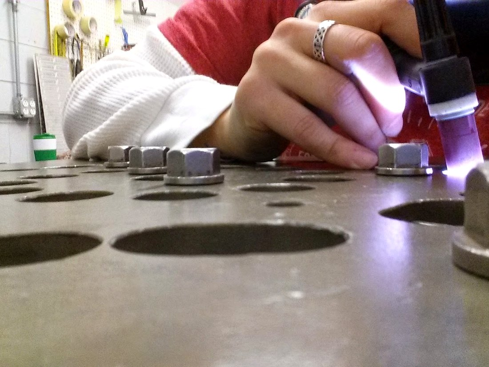
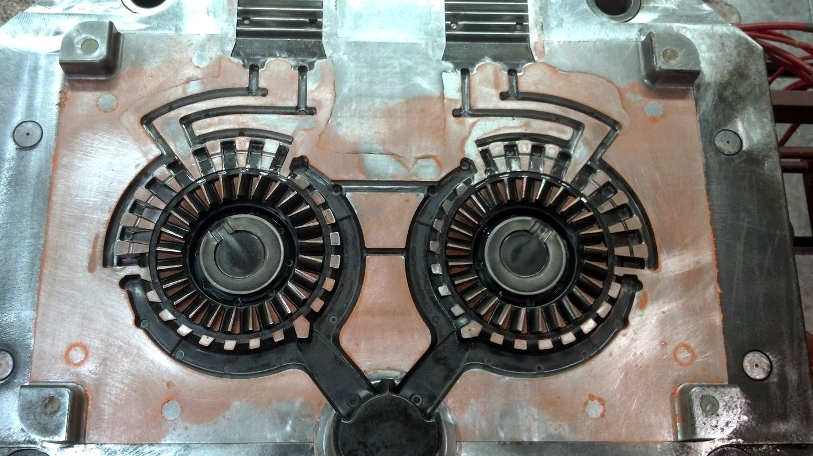

I welded for twenty years, in shops that had to hold ISO certification. I came out from under the hood in 2017 and moved into quality systems — auditing them, documenting them, and fixing the ones that were failing. Cornett Consulting Company brings that to small contractors, fabricators, and industrial shops in Ohio — the ones being asked to prove a quality system. Some have never written one down. Some have one that stopped matching the work years ago. Both are normal, and neither is a reason to be embarrassed.

Circa 2016 — welding for an aerospace manufacturer

Circa 2013 — die maintenance for an automotive manufacturer
Work in short, honest cycles you can actually finish — and learn from.
Change the plan when the plan stops fitting the work in front of you.
Ship something real at the end of every cycle — not just a status update.
Every engagement is grounded in certified expertise and time actually spent in the trades. Not theory — the same standards your customers are asking you to meet.
Certified in planning and delivering work in short, accountable cycles — so an implementation finishes instead of stalling.
Prioritization and stakeholder alignment — deciding what gets built first when everything feels urgent.
Foundational certification in iterative delivery — the third of three ICAgile credentials held.
Rigorous, data-driven process improvement — the same discipline used to cut waste in manufacturing, applied to everyday operations.
ONET (Kentucky), WABO (Washington), and NADCAP (Ohio) certified, across shops that had to hold ISO certification. I've been the one whose work gets inspected, to some of the strictest weld qualifications there are.
The AS9100D Lead Auditor Probitas certification, issued by SAI Global — qualified to audit a quality management system against AS9100D and lead the audit, exactly as a registrar's auditor does. AS9100D is the aviation, space and defense standard: it contains all of ISO 9001 and adds to it. The strictest lens I own, and the one I point at a shop first.
Certificate of Qualification as a Welding Inspector Specialist, in accordance with AWS B5.2. The bridge between twenty years at the hood and the audit work I do now — the first credential that said inspector rather than welder.
Certified to audit a quality management system against ISO 9001 — the standard your customers are most likely citing.
Before founding Cornett Consulting Company, I took a Cincinnati manufacturer from nothing documented to certified against ISO 9001 in ninety days.
Serving Ohio, from Cincinnati to Columbus. Call 513.923.7656 or email and I'll follow up within a couple of days.